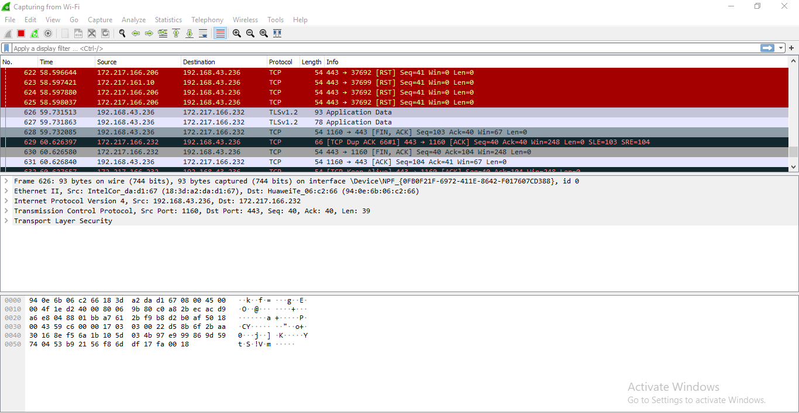

Wireshark est un outil de sécurité réseau utilisé pour analyser ou travailler avec des données envoyées sur un réseau. Il est utilisé pour analyser les paquets transmis sur un réseau. Ces paquets peuvent contenir des informations telles que l’adresse IP source et l’adresse IP de destination, le protocole utilisé, les données et certains en-têtes. Les paquets ont généralement une extension « .pcap » qui peut être lue à l’aide de l’outil Wireshark.
